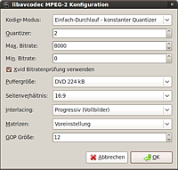
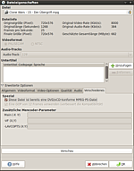

TS-Daten archivieren
Dieser Artikel wurde für die folgenden Ubuntu-Versionen getestet:
Dieser Artikel ist größtenteils für alle Ubuntu-Versionen gültig.
Zum Verständnis dieses Artikels sind folgende Seiten hilfreich:
TS-Dateien (.ts, Abkürzung für Transportstrom) erhält man bei der Aufzeichnung von Audio- und Videodaten durch DVB-Geräte und/oder -Software (Kaffeine verwendet die Endung .m2t). Dieser Artikel beschäftigt sich mit Methoden zum Archivieren und Konvertierung solcher Daten bzw. damit, welche Programme wie zu nutzen sind, um dieses Ziel zu erreichen.
TS-Datei entschachteln (demultiplex)¶
Zu Anfang liegen eine oder mehrere TS-Dateien vor. Diese können durch die Übertragung Fehler beinhalten, die zu Problemen mit der Audio-/Video-Synchronität führen können. Daher werden die TS-Dateien zunächst mit ProjectX [2] entschachtelt (demux) oder in ein M2P-Video ("to M2P") umgewandelt. Man kann die TS-Datei mit ProjectX mit dem Demuxen auch gleichzeitig schneiden.
Um den Vorgang des Entschachtelns mit ProjectX zu erleichtern, speichert man folgenden Skript mit einem Texteditor seiner Wahl in einer einfachen Text-Datei, die danach ausführbar gemacht wird[5]. Diese ausführbare Datei wird dann in das entsprechenden Verzeichnis mit den TS-Dateien kopiert und ausgeführt.
Für das Skript muss nun nur noch mplex über die Paketverwaltung installiert[4] werden:
mjpegtools (multiverse )
 mit apturl
mit apturl
Paketliste zum Kopieren:
sudo apt-get install mjpegtools
sudo aptitude install mjpegtools
Hinweis:
Dieses Skript entschachtelt die TS-Dateien mit ProjectX und speichert die Daten aus der TS-Datei mit mplex dann neu strukturiert in einem MPEG-Container (die vorhandenen TS-Dateien bleiben erhalten), welche man dann einfach mit Avidemux öffnen kann, ab.
Der Vorteil hierbei liegt darin u.a., dass Video- und Tonspur schon synchronisiert werden und dies nicht mehr händisch geschehen muss.
Hinweis:
Bei Sendungen des Öffentlich-Rechtlichen Fernsehens kommt es vor, dass die Datei nicht die deutsche Audiospur enthält (arte) oder aber man hat Audiodeskriptionen für Blinde und Sehbehinderte mit dabei (ARD und ZDF). Damit man die gewünschte Audiospur nachträglich in Avidemux auswählen kann, müssen die Zeilen 20 und 21 des Skriptes auskommentiert werden.
Hinweis:
HD-Material kann, mit diesem Skript, nicht neu strukturiert werden, da ProjectX diese Dateien nicht verarbeiten kann.
1 2 3 4 5 6 7 8 9 10 11 12 13 14 15 16 17 18 19 20 21 22 23 24 25 26 | #!/bin/bash for file in *{.ts,.m2t} ; do echo "Konvertiere $file" DIR=$(dirname "$file") FILENAME=$(basename "$file") NAME=`echo $FILENAME | cut -d'.' -f1` projectx "$file" if [ -f "$DIR"/"$NAME".ac3 ] then mplex -f 8 -o "$DIR"/"$NAME".mpg "$DIR"/"$NAME".ac3 "$DIR"/"$NAME".m2v "$DIR"/"$NAME".mp2 "$DIR"/"$NAME".mp2 rm "$DIR"/"$NAME".ac3 >/dev/null 2>&1 & else mplex -f 8 -o "$DIR"/"$NAME".mpg "$DIR"/"$NAME".m2v "$DIR"/"$NAME".mp2 "$DIR"/"$NAME".mp2 fi rm "$DIR"/"$NAME".m2v >/dev/null 2>&1 & rm "$DIR"/"$NAME".mp2 >/dev/null 2>&1 & rm "$DIR"/"$NAME"[1].mp2 >/dev/null 2>&1 & rm "$DIR"/"$NAME"_log.txt >/dev/null 2>&1 & done echo "Fertig!"; |
Schneiden und Exportieren¶
Hierfür wird Avidemux [3] benutzt. Hat man nicht das Skript benutzt, dann lädt man als erstes die exportierte(n) Datei(en) von ProjectX, ansonsten lädt man die MPEG-Dateien. Hat man in ProjectX die Methode "to M2P" benutzt, darf man nicht vergessen, die Tonspur in Avidemux zu synchronisieren (siehe Ton-Synchronisation in Avidemux).
Anschließend schneidet man das Videomaterial und tätigt die Einstellungen für den Export.
Für eine bestmögliche Qualität sollte man sich nun entscheiden, ob man das Filmmaterial als DVD haben möchte oder auf der Festplatte archivieren möchte.
| Einstellungen für Video-Export | ||
| Einstellung | DVD | Festplatte |
| Video-Codec | DVD (lavc) | MPEG-4 AVC (x264) |
| Video-Konfiguration | siehe Bildschirmfoto | Bitrate: Einfacher Durchlauf - Qualitäts-Quantizer (Durchschnitt) |
| sinnvolle Video-Filter | Deinterlacing (nicht zwingend) | Deinterlacing, Zuschneiden (bei schwarzen Balken im Video), Größe ändern (für kleinere Ausgabe) |
| Audio-Codec | die Audiospur kann meistens kopiert werden, da MP2 und AC3 DVD-konform sind | Vorbis, MP3, Kopie |
| Audio-Konfiguration | entfällt wegen Kopie | Vorbis: Qualitätsbasiert (höher = bessere Qualität); MP3: ABR |
| sinnvolle Audio-Filter | keine | keine |
| Format | MPEG-PS (A+V) | MP4 oder MKV (wenn Tonspur AC3 oder Vorbis ist) |
Nach den Einstellungen kann die Datei abgespeichert werden.
DVD-konforme Video-Konfiguration¶
 Die Einstellungen können dem Bildschirmfoto entnommen werden. Die Einstellungen "Seitenverhältnis" und "Interlacing" hängen vom Quellmaterial ab.
Für die beste Qualität kann man einen konstanten Quantizer von 2 benutzen. Dies ist allerdings nicht die effizienteste Methode. Wenn man z.B. mehrere Folgen einer Serie auf eine DVD brennen will oder die Gefahr besteht, dass der exportierte Film zu groß wird, sollte man "Zweifach-Durchlauf - Videogröße" verwenden. Bitte beachten, dass in der Größenangabe die Größe der Tonspur nicht berücksichtigt wird. Die benötigten Werte lassen sich mit dem "Taschenrechner" (in der Menüleiste von Avidemux) oder manuell berechnen:
Rechenbeispiel¶
Szenario: man möchte vier Folgen einer TV-Serie auf eine DVD mit 4,4 GiB brennen, wobei jede Folge eine Länge von 45 Minuten hat und die Audiospur ein AC3 mit 6 Kanälen (5.1) ist. In Avidemux werden Dateigrößen-Umrechnungen übrigens binär (2^10) und nicht SI-konform (10^3) berechnet.
Zunächst sollte man ein wenig Reserve einkalkulieren, denn der Zweifach-Durchlauf trifft die Dateigröße nicht immer genau und es wird noch zusätzlicher Speicherplatz für DVD-Menüs benötigt. Bei einer Reserve von ca. 200 MiB bleiben noch 4,2 GiB übrig, also 1075 MiB pro Folge.
Die Bitrate der 5.1-Audiospur ist 384 kBit/s. Man rechnet: (45m x 60s x 384000 Bit) / (8 Bit/Bytes x 1024 x 1024) = 123,6 MiB. Für das Video bleiben demnach noch 1075 MiB - 123,6 MiB = 951,4 MiB übrig. In der Konfiguration des Video-Codecs wählt man "Zweifach-Durchlauf - Videogröße" aus und trägt bei "Video Größe (MB)" den abgerundeten Wert 950 ein.
DVD-Authoring¶
 Im Artikel DVD-Authoring finden sich viele Programme, mit denen man die mit Avidemux erstellte Video-Datei weiterverarbeiten kann. Mehrere Programme unterstützen den Import bereits DVD-konformer Daten. Dies hat den Vorteil, dass die Bearbeitung schneller ist und dass die Bildqualität erhalten bleibt, weil das Videomaterial nicht erneut kodiert wird. Ein Programm mit grafischer Oberfläche ist DeVeDe.
Bei DeVeDe ist beim Import der Video-Datei eine spezielle Option zu wählen: Im Dialog "Dateieigenschaften" wählt man "Erweiterte Optionen" und aktiviert unter dem Reiter "Verschiedenes" die Option "Diese Datei ist bereits eine DVD/xCD-konforme MPEG-PS-Datei" (siehe Bildschirmfoto).
Terminal¶
Wer weder Zeit noch Lust hat, sich in die eben genannten Programme einzuarbeiten, kann die zugrunde liegende Anwendung
dvdauthor (universe)
mit apturl
Paketliste zum Kopieren:
sudo apt-get install dvdauthor
sudo aptitude install dvdauthor
auch in einem Terminal-Fenster nutzen. Als Ordner für die Ausgabe wird im folgenden Beispiel ~/Videos/dvd/ im Homeverzeichnis verwendet. Dieser Ordner muss zuerst erstellt werden und ist ggf. anzupassen:
dvdauthor -o ~/Videos/dvd -t <MPEG-DATEI> dvdauthor -o ~/Videos/dvd -T
Anschließend brennt man den Inhalt des Ordners ~/Videos/dvd/ (nicht den Ordner selbst!) mit einem beliebigem Brennprogramm auf DVD (Daten-DVD erstellen). Weitere Hinweise zu dvdauthor können der Manpage zum Programm entnommen werden.
Problembehandlung¶
falsches Seitenverhältnis nach Avidemux-Export¶
Wurde "DVD (lavc)" verwendet, ist im Einstellungs-Dialog wahrscheinlich das falsche Seitenverhältnis ausgewählt.
Wurde "MPEG-4 AVC (x264)" verwendet, muss man im Konfigurationsdialog im Reiter "Bewegung & Sonstiges" bei "Abfrage Seitenverhältnis (A/R)" ein anderes Seitenverhältnis einstellen. Hier kann auch die Einstellung "1:1" das Problem lösen.
Links¶
Videobearbeitung
 Programmübersicht
ProgrammübersichtDVD-Authoring
- ProgrammübersichtDVD-Erstellung aus Festplattenreceiveraufnahmen mit farbigen Untertiteln von BBC und ITV - Anleitung mit Beispiels-Konfigurationsdateien und Automatisierungsskripten aus dem Topfield-Wiki

Matroska - Containerformat MKV

- Erstellt mit Inyoka
-
 2004 – 2017 ubuntuusers.de • Einige Rechte vorbehalten
2004 – 2017 ubuntuusers.de • Einige Rechte vorbehalten
Lizenz • Kontakt • Datenschutz • Impressum • Serverstatus -
Serverhousing gespendet von